Поздравляем, Вы превосходно прошли курс терапии ДПН!
Скачайте статью для изучения В.А. Парфенов, М.В. Коняшова Терапия болевой диабетической невропатии
Скачать
Проверьте свои знания в лечении других патологий
Схема применения:

* Нет аналогов габапентинов для дозы 600 мг
** Выпускается в виде капсул и делимых таблеток для удобства титрации дозы и подбора терапии
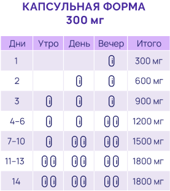

Лечение можно начинать сразу с дозы 900 мг/сутки (по 300 мг 3 раза в сутки) или можно увеличивать дозу постепенно до 900 мг в сутки в течение первых 3 дней1
При необходимости и в зависимости от эффекта дозу постепенно увеличивают до максимальной — 3600 мг/сутки1
В зависимости от ответа на терапию и переносимости препарата доза препарата Нейронтин® может быть повышена на 300 мг/сутки каждые 2–3 дня, максимально до 3600 мг/сутки1
Минимальное время, за которое можно повысить дозу1:
- до 1800 мг/сутки — 1 неделя
- до 2400 мг/сутки — 2 недели
- до 3600 мг/сутки — 3 недели
У пациентов в тяжелом состоянии (с пониженной массой тела, после трансплантации органов) дозу следует повышать медленно1:
- используя меньшие дозы
- увеличивая интервалы перед повышением дозы
Первый этап лечения препаратом Нейронтин® — 4 недели5
Дальнейшая тактика ведения пациентов5
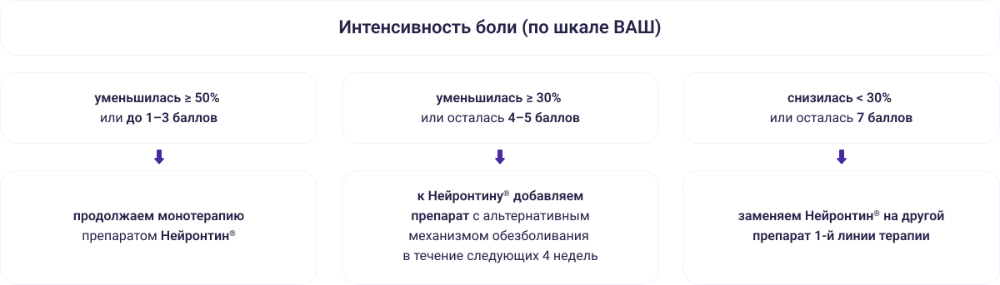Отменять Нейронтин® следует постепенно — в течение 1 недели минимум1
Механизм действия габапентина (Нейронтин®)1:
Габапентин связывается с α-2-δ (альфа-2-дельта) субъединицей потенциалзависимых кальциевых каналов в «перевозбужденных» нейронах
Блокирует поступление кальция в нейрон на пресинапсе
Препятствует высвобождению глутамата в синаптическую щель в ответ на болевой импульс
Прекращает передачу болевого импульса с периферического на центральный нейрон
Способствует уменьшению боли
Нейронтин® — оригинальный габапентин, действует на «перевозбужденные» нейроны, не влияя на нормально функционирующие2,5,6.
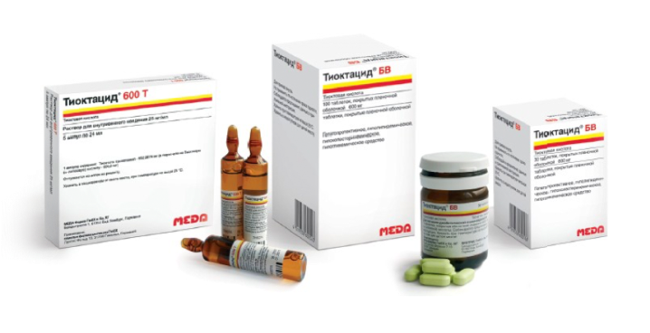
Тиоктацид® 600Т и Тиоктацид® БВ —
оригинальные препараты альфа‑липоевой (тиоктовой) кислоты1
Тиоктацид® БВ №30 и №100 2
-
Рекомендуемая доза — 1 таблетка (600 мг) 1 раз в день
-
Препарат принимают натощак, за 30 мин до завтрака, запивая водой и не разжевывая
Тиоктацид® 600Т — раствор 600 мг
(24 мл) №5 2
может применяться в виде:
-
инфузий в 0,9% растворе хлорида натрия (объем инфузии — 100–250 мл) в течение 30 мин
-
неразбавленного раствора с помощью шприца для в/в инъекций и перфузора (время введения не менее 12 мин)
Терапия ДПН подразумевает длительный период, поскольку негативные факторы (гипергликемия, оксидативный стресс и т.д.), приводящие к развитию этого осложнения, никуда не исчезают1-3.
Таблетированные формы препаратов позволяют проводить терапию без необходимости обращаться за специализированной помощью для проведения в/в инфузий1-3.
Тиоктацид® БВ — оригинальный препарат тиоктовой кислоты с улучшенными показателями фармакокинетики, позволяет поддерживать стабильную терапевтическую концентрацию препарата в крови1-3
-
В тяжелых случаях лечение начинают с назначения препарата Тиоктацид® 600Т — раствора для внутривенного введения — в течение 2–4 недель, затем пациента переводят на лечение Тиоктацид® БВ2.
-
Согласно проведенным исследованиям применение тиоктовой кислоты от 3 недель до 4 лет приводило к уменьшению симптомов ДПН и неврологического дефицита1-3.
Механизм действия
Тиоктовая кислота является эндогенным антиоксидантом, по биохимическому механизму действия она близка к витаминам группы В2.
Тиоктовая кислота способствует2:
- защите клетки от токсического действия свободных радикалов, возникающих в процессах обмена веществ
- обезвреживанию экзогенных токсичных соединений, проникших в организм
- повышению концентрации эндогенного антиоксиданта глютатиона → уменьшению выраженности симптомов полинейропатии
Препарат может оказывать действие2:
- улучшающее трофику нейронов
- гепатопротекторное
- гипохолестеринемическое
- гиполипидемическое
- гипогликемическое
Результатом синергического действия тиоктовой кислоты и инсулина является повышение утилизации глюкозы2
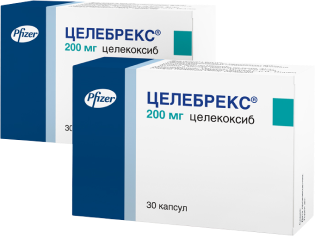
Целебрекс® — оптимальный баланс эффективности и безопасности в терапии боли1,2
Согласно исследованиям,
- наступление эффекта возможно уже через 22 минуты, длительность — до 24 часов3
- нет ограничений по длительности приёма**1
**Согласно инструкции по применению препарата Целебрекс® капсулы, рег. уд. ЛП-002118, П N015986/01
Схема применения
Острая боль1:
Боль в спине, костно-мышечные боли, первичная дисменорея, послеоперационные боли, другие сравнимые по интенсивности боли
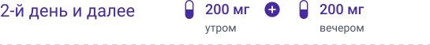 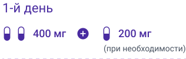 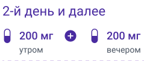Хроническая боль1:
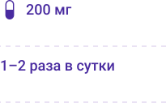 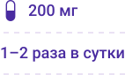
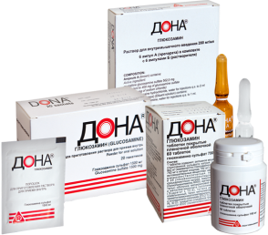
Дона® — оригинальный кристаллический глюкозамина сульфат для базовой терапии ОА1‑3
Тройной эффект Дона® способствует1:
- уменьшению боли
- восстановлению функции сустава
- защите сустава от разрушения
Схема курсового применения препарата Дона®
(курс 3–6 месяцев 1–2 раза в год)1,4,5
При повторных курсах и у пациентов без выраженного болевого синдрома или нарушения движения суставов, можно использовать саше или таблетки в течение 3‑6 месяцев1,4,5
Препарат Сермион® (ницерголин) содействует увеличению доступности ацетилхолина за счет1-4:
- повышенного высвобождения из холинергических окончаний
- угнетения активности ацетилхолинэстеразы
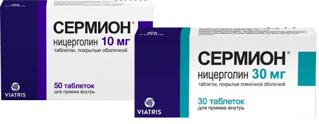
Варианты схемы перорального приема препарата Сермион®5:
-
Применение препарата 1 раз/сутки может способствовать увеличению приверженности пациентов лечению 8,10 *
-
Длительная терапия способствует улучшению когнитивных функций 5‑9 *
Сермион® способствует5‑8:
-
улучшению реологии крови за счет снижения агрегации тромбоцитов
-
улучшению микроциркуляции за счет увеличения количества функционирующих капилляров
-
увеличению активности ацетилхолинергической, норадренергической и дофаминергической церебральных систем → содействует улучшению когнитивных процессов
Показания к применению5
Симптоматическая терапия когнитивных нарушений,
в том числе деменции, при хронических цереброваскулярных и органических поражениях головного мозга, сопровождающихся снижением памяти, концентрации внимания, мышления, активности, повышенной утомляемостью, эмоциональными расстройствами.
Примечание: перед началом лечения ницерголином необходимо удостовериться, что данные симптомы не являются проявлением другого заболевания (как, например, внутренних болезней, психиатрических или неврологических заболеваний) и не требуют специфической терапии
Используемые источники информации:
- 1. Инструкция по медицинскому применению препарата Нейронтин® капсулы, рег. уд. П N013567/01, таблетки, покрытые пленочной оболочкой рег. уд. П N013567/02
- 2. Давыдов О.С., Яхно Н.Н., Кукушкин М.Л. и соавт. Невропатическая боль: клинические рекомендации по диагностике и лечению Российского общества по изучению боли. Российский журнал боли. № 4. 2018. 5–41.
- 3. IMS Global Data [Электронный ресурс]. — Режим доступа: https://www.imsglobal.org/ свободный — (22.07.2022).
- 4. Аптека.ру [Электронный ресурс]. — Режим доступа: https://apteka.ru свободный — (22.07.2022).
- 5. Данилов Б., Шугурова И.М. Нейронтин — оригинальный препарат из группы габапентиноидов. Manage pain No1, 2021, стр 1–7.
- 6. PRAC PSUR AR — NAPs only EMA/PRAC/530852/2019 — Внутренний документ компании Viatris, может быть предоставлен по запросу
* Согласно консенсусу международных экспертов по лечению ДПН
Список сокращений:
ДПН — диабетическая периферическая нейропатия
Используемые источники информации:
- 1. Лунева И.Е., Гришина Д.А., Супонева Н.А. Современные подходы к терапии диабетической полинейропатии. Эффективная фармакотерапия. 2022; 18 (10): 28–36.
- 2. Инструкция по медицинскому применению препарата Тиоктацид® БВ таблетки рег уд. П N015545/01, Тиоктацид® 600Т раствор для внутривенного введения рег уд. П N014923/01
- 3. Архипов В.В., Городецкая Г.И., Журавлева М.В. и др. Влияние вспомогательных веществ на эффективность и безопасность препаратов тиоктовой кислоты. РМЖ. Медицинское обозрение. 2016; 24(26):1788—1794.
Используемые источники информации:
- 1. Инструкция по медицинскому применению препарата Целебрекс® капсулы рег. уд. ЛП-002118 от 03.07.2018, П N015986/01 от 28.04.2021, https://www.viatrisconnect.ru/ru-RU/Viatris-Medicine/Celebrex/Instructions-for-use?utm=123
- 2. Birmingham B., Buvanendran A. Nonsteroidal Anti-inflammatory Drugs, Acetaminophen, and COX-2 Inhibitors / Practical Management of Pain (Fifth Edition), 2014.
- 3. Bruyère O. et al. Обновленные рекомендации по алгоритму лечения остеоартрита коленного сустава Европейского общества по клиническим и экономическим аспектам остеопороза, остеоартрита и заболеваний костно-мышечной системы (ESCEO), Семинары по артриту и ревматизму 2019 г., стр. 1–14.
Используемые источники информации:
- 1. Дыдыкина И.С., Денисов Л.Н., Коваленко П.С., Лила А.М. История открытия и многолетний опыт применения глюкозамина сульфата в клинической практике // Эффективная фармакотерапия. 2020. Т. 16. № 16. С. 26–34.
- 2. Kucharz EJ, Kovalenko V, Szántó S, Bruyère O, Cooper C, Reginster JY. A review of glucosamine for knee osteoarthritis: why patented crystalline glucosamine sulfate should be differentiated from other glucosamines to maximize clinical outcomes. Curr Med Res Opin. 2016 Jun; 32(6): 997–1004.
- 3. Инструкция по применению лекарственного препарата Дона®, раствор для внутримышечного введения, таблетки, порошок для приготовления раствора для приема внутрь, регистрационное удостоверение П N013737/01 от 30.03.2017, ЛП-001932 от 18.06.2020, П N013659/01 от 27.05.2020, https://www.viatrisconnect.ru/ru-RU/Viatris-Medicine/Dona/Instructions-for-use?utm=123
* В случае применения препарата Сермион® в соответствии с инструкцией по медицинскому применению П N012181/01 в дозе 30 мг в сутки однократно и с учетом результатов систематического обзора и метаанализа (Coleman C. I. et al. 2012), где было показано, что приверженность лечению повышается с уменьшением кратности приема в день.
** При условии правильного применения препарата, при этом врач должен периодически, по крайней мере каждые 6 месяцев, оценивать эффект лечения и целесообразность его продолжения.
Используемые источники информации:
- 1. Winblad B, Fioravanti M, Dolezal T, Logina I, Milanov IG, Popescu DC, Solomon A. Therapeutic use of nicergoline. Clin Drug Investig. 2008; 28(9):533-52. doi: 10.2165/00044011-200828090-00001
- 2. Winblad, B., Carfagna, N., & Bonura, L. (2001). Nicergoline in dementia: a review of its pharmacological properties and therapeutic potential (vol 14, pg 267, 2000). CNS DRUGS, 15(1), 58–58.
- 3. Carfagna, N., Di Clemente, A., Cavanus, S., Damiani, D., Gerna, M., Salmoiraghi, P., ... & Post, C. (1995). Modulation of hippocampal ACh release by chronic nicergoline treatment in freely moving young and aged rats. Neuroscience letters, 197(3), 195–198.
- 4. Proof of Therapeutical Effectiveness of Nootropic and Vasoactive Drugs. Advances in Clinical and Experimental Nicergoline Research. 1985th edition. by Heinz Heidrich (Editor). Springer. 269 pp
-
5. Инструкция по медицинскому применению препарата Сермион®
лиофилизат рег. уд. РУ N011253/02, таблетки 5, 10 мг
рег. уд. РУ N011253/01, таблетки по 30 мг
рег. уд. Руп N012181/01 от 20.07.2021.
https://www.viatrisconnect-ru.com/ru-RU/Viatris-Medicine/Sermion/Instructions-for-use?utm=123 - 6. Захаров Д.В., Михайлов В.А. Проблемы церебральной микроциркуляции как терапевтическая мишень. Обозрение психиатрии и медицинской психологии имени В.М. Бехтерева 3 (2016): 103–108
- 7. Philippon B., Thivolle P., Berger M. Nicergoline and steal effect in favor of zones of hypoperfusion in cerebral ischemic accidents, 1982; 12(4): 361–6.
- 8.Кузнецов А.А., Кабакова Т.И., Кузнецов А.В. Лекарственная форма и ее потребительные свойства как дополнительный фактор лекарственной комплаентности. Современные проблемы науки и образования. 2012(5): 356-356.
- 9. Свищенко Е.П., Безродная Л.В., Гулкевич О.В. Высокие дозы СЕРМИОНА — новый подход к лечению больных с цереброваскулярной патологией. Крымский терапевтический журнал, 1999 (4), С. 1–9.
- 10. Coleman C. I. et al. Dosing frequency and medication adherence in chronic disease //Journal of Managed Care Pharmacy. — 2012. — Т. 18. — №. 7. — С. 527-539.
Материал предназначен для специалисов здравоохранения
Реклама